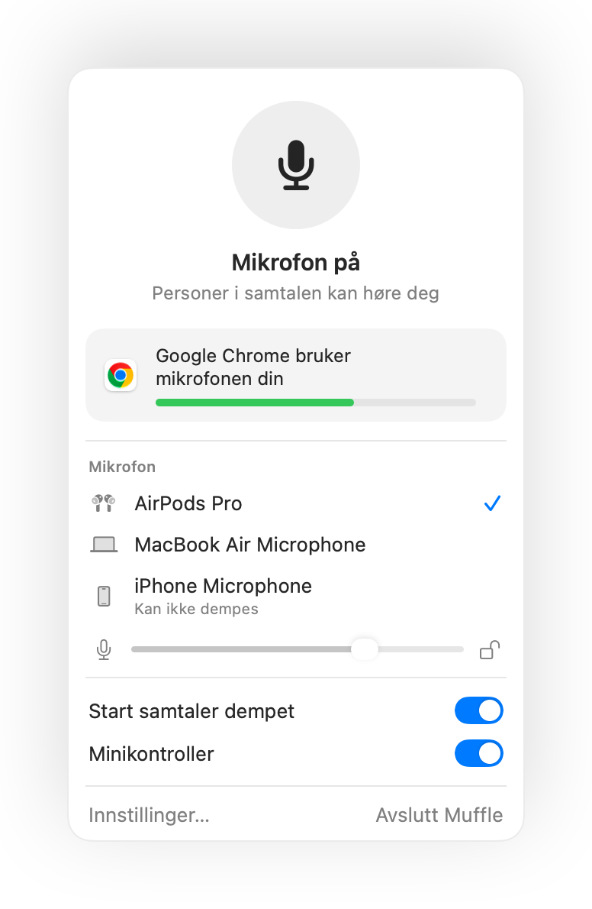
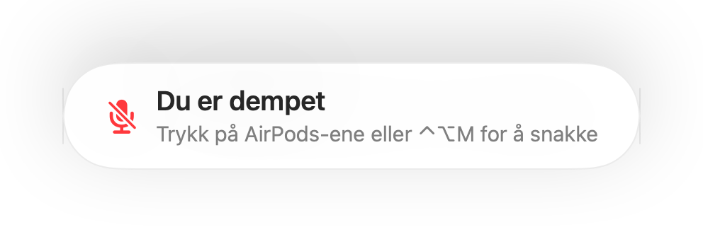
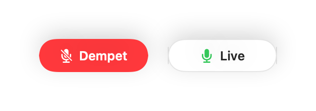
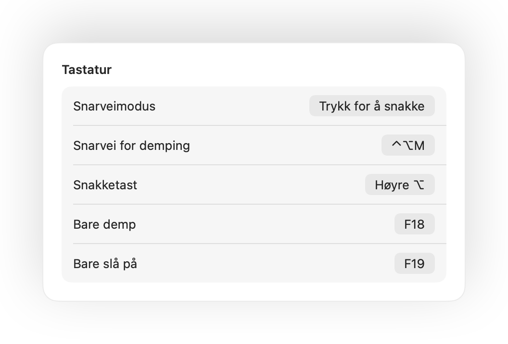
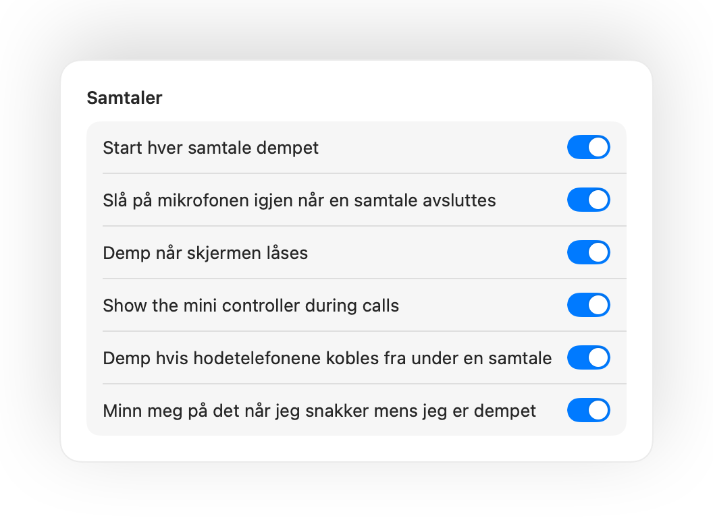

Trykk på AirPods-ene for å dempe
I enhver samtale kan du trykke én gang på stilken for å dempe, og trykke igjen for å slå på. Det fungerer også i Chrome, der Google Meet og andre nettsamtaler ignorerer trykk på AirPods.
Muffle for Mac
Trykk på AirPods-ene eller én tastatursnarvei. Muffle slår av selve mikrofonen, slik at Google Meet, Zoom, Teams, Slack og alle andre apper bare hører stillhet.
Gratis i 3 dager. Deretter én betaling, ikke noe abonnement. For macOS 14 Sonoma og nyere.
Demp, velg mikrofon, lås nivået og slå funksjoner av og på, rett fra menylinjen.
Muffle demper mikrofonen på maskinvarenivå, så det spiller ingen rolle hvilken app, nettleser eller fane som bruker den.
Trykk på stilken under enhver samtale. Muffle slår av selve mikrofonen, så Meet, Zoom, Teams og alle andre apper ikke hører noe.
Muffle gjenkjenner stemmen din og minner deg på det, før du forklarer hele ideen din til ingen.

De fleste dempeknapper demper bare én app. Muffle slår av selve mikrofonen, så alle apper på Mac-en din hører stillhet.
I enhver samtale kan du trykke én gang på stilken for å dempe, og trykke igjen for å slå på. Det fungerer også i Chrome, der Google Meet og andre nettsamtaler ignorerer trykk på AirPods.
Begynner du å snakke mens du er dempet, gir Muffle deg beskjed før du forklarer hele ideen din til ingen.

Control-Tilvalg-M demper deg overalt, selv når samtalen er i en fane i bakgrunnen. Hold inne for å snakke mens du er dempet, og slipp for å dempe igjen.
En liten flytende knapp viser mikrofonstatusen under samtaler. Klikk på den for å dempe eller slå på.

Velg hvordan snarveien din skal fungere: trykk for å dempe eller slå på, hold inne for å snakke, eller hold inne for å dempe ved et host. Legg til egne taster for å dempe og slå på, eller hold inne én tast som Høyre ⌥ eller en ekstra museknapp.

Slo du på lyden for å si én ting? Hvis du deretter er stille i tiden du velger, demper Muffle deg igjen. Bare stemmen din teller, ikke tasting eller bakgrunnsstøy.
Med AirPods i et stille rom foreslår Muffle mikrofonen på Mac-en din så AirPods-ene spiller samtalen i full kvalitet. Når det blir støy, foreslår den AirPods-mikrofonen.

Chrome, Zoom og Teams endrer mikrofonnivået på egen hånd. Lås det, så setter Muffle det tilbake.
Start hver samtale dempet, slå på mikrofonen igjen når en samtale avsluttes, og demp når du låser Mac-en.

Hvis hodetelefonene kobles fra midt i en samtale, demper Muffle før samtalen bytter til Mac-ens mikrofon og sender ut lyden fra hele rommet.
Demp fra appen Snarveier, Siri, en Stream Deck, Raycast eller en knapp i Kontrollsenter.
En grønn eller rød glød rundt skjermen, et farget menylinjeikon, en flytende knapp og en lyd du kan slå av for hver mikrofon. Slå på de du liker.
Muffle tar aldri opp, lagrer eller sender lyd. Appen bare slår mikrofonen av og på og leser lydstyrken. Ingen kontoer, ingen analyse, ingen sporing.
Installer Muffle fra Mac App Store og gi mikrofontilgang.
Bli med i en samtale i en hvilken som helst app, akkurat som vanlig.
Trykk på AirPods-ene, trykk Control-Tilvalg-M, eller klikk på ikonet i menylinjen for å dempe.
Ja. Chrome sender ikke trykket for å dempe på AirPods videre til nettsamtaler, så Muffle fanger det opp og demper selve mikrofonen. Det samme gjelder for alle samtaler i en nettleserfane.
Samtaleappen viser kanskje fortsatt at mikrofonen er på, fordi Muffle slår av selve mikrofonen i stedet for knappen i appen. De andre hører stillhet uansett. Muffle-ikonet i menylinjen blir rødt mens du er dempet.
AirPods Pro, AirPods 3 og nyere, samt AirPods Max, i tillegg til Beats-modeller med samtalekontroller. Tastatursnarveien og menylinjen fungerer med alle mikrofoner.
Ja. Muffle fungerer med alle apper på Mac-en din som bruker mikrofonen, både skrivebordsapper og samtaler i nettleseren.
Nei. Prøv alle funksjoner gratis i 3 dager, og lås deretter opp Muffle med et engangskjøp.
macOS sender bare trykk på AirPods videre til apper som bruker mikrofonen, så Muffle holder en stille forbindelse åpen under samtaler. Ingenting blir tatt opp.
Muffle slår på mikrofonen igjen når appen avsluttes, så du blir aldri sittende fast uten lyd.
macOS 14 Sonoma og nyere. Knappen i Kontrollsenter krever macOS 26 eller nyere.
Ja. Velg Trykk for å snakke i Innstillinger og hold inne snarveien for å snakke. Du kan også holde inne en enkelttast som Høyre ⌥ eller fn, eller en ekstra museknapp.
Når en samtale bruker AirPods-mikrofonen, bytter AirPods til samtalemodus, som spiller av lyd i lavere kvalitet. I et stille rom foreslår Muffle mikrofonen på Mac-en din i stedet, slik at AirPods fortsetter å spille i full kvalitet.
Nei. Muffle gjenkjenner tale med Apples lydanalyse på enheten, så bare snakking teller. Tasting, klikk og bakgrunnsstøy teller ikke, og ingenting blir tatt opp.
Korte, praktiske svar for å dempe mikrofonen på Mac, i alle apper.
Muffle er gratis å prøve i 3 dager.